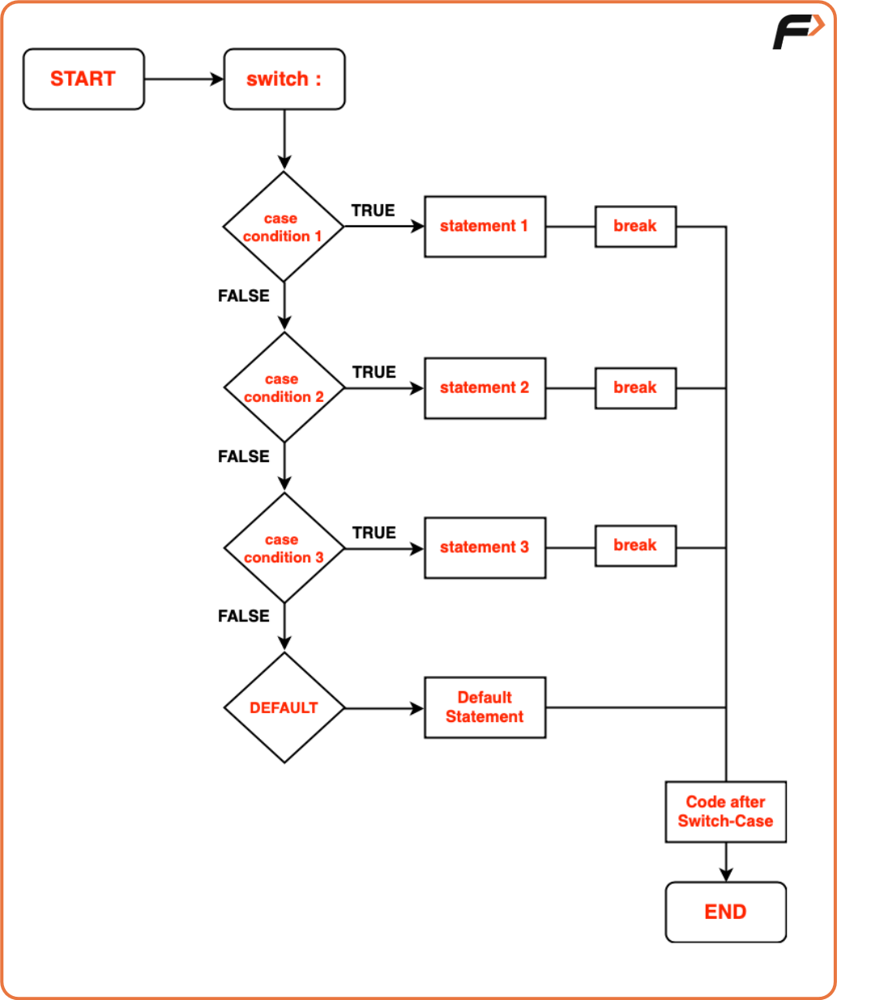

Switch Case Statements
If-else statements are like the Swiss Army knife of decision-making. They offer flexibility and can handle a wide range of conditions and branching logic. You can use them when you need to evaluate complex conditions or when conditions aren't based on simple equality checks. If-else statements are often the preferred choice for scenarios where the conditions are not easily enumerable or where you need to execute different blocks of code based on various conditions.
On the other hand, switch statements shine when you have a single variable to compare against multiple distinct values. They are concise, making the code cleaner and more structured. So, if-else statements and switch statements can complement each other, with if-else statements handling complex conditions and switch statements simplifying cases with multiple exact matches.
The ‘Switch’ Statement

To illustrate the switch statement, let's consider a common problem: given a number between 1 and 7, print the corresponding day of the week. Here's how we can use the switch statement for this task:
Code:
#include <iostream>
using namespace std;
int main() {
int day;
// Prompt user to enter a number between 1 and 7
cout << "Enter a number (1-7): ";
cin >> day;
// Switch statement to determine the day
switch (day) {
case 1:
cout << "Monday" << endl;
break; // Exit switch after matching case
case 2:
cout << "Tuesday" << endl;
break;
case 3:
cout << "Wednesday" << endl;
break;
case 4:
cout << "Thursday" << endl;
break;
case 5:
cout << "Friday" << endl;
break;
case 6:
cout << "Saturday" << endl;
break;
case 7:
cout << "Sunday" << endl;
break;
default:
// Executed if input is not between 1 and 7
cout << "Invalid" << endl;
}
return 0; // End program
}
// Prompt user to enter a number between 1 and 7
const day = parseInt(prompt("Enter a number (1-7):"));
// Switch statement to determine the day
switch (day) {
case 1:
console.log("Monday");
break; // Exit switch after matching case
case 2:
console.log("Tuesday");
break;
case 3:
console.log("Wednesday");
break;
case 4:
console.log("Thursday");
break;
case 5:
console.log("Friday");
break;
case 6:
console.log("Saturday");
break;
case 7:
console.log("Sunday");
break;
default:
// Executed if input is not between 1 and 7
console.log("Invalid");
}
In this example, if you set the day variable to 4, it will print "Thursday" since it matches the case 4 statement. The break statement is crucial; it ensures that the switch statement exits after the matching case is executed, preventing the execution of subsequent cases.
The Default Case: The default case serves as a safety net. If none of the cases match the expression, the code inside the default block will execute. In our example, if you input a number outside the range of 1 to 7, it will print "Invalid."
Key Considerations for Switch Case Statements:
- Requirement for a Constant Expression
A switch statement necessitates that its expression results in a constant value. This can include constants and arithmetic operations.
Code:
#include <iostream>
using namespace std;
int main() {
// Define two constant integers
const int x = 10;
const int y = 5;
// Evaluate the sum of x and y using a switch statement
switch (x + y) {
case 15: // If the sum equals 15
cout << "Result is 15." << endl;
break; // Exit the switch block
case 20: // If the sum equals 20
cout << "Result is 20." << endl;
break; // Exit the switch block
default: // If no case matches
cout << "No match found." << endl;
}
return 0; // End of program
}
- Limited to Integer or Character Types
Switch statements are exclusively designed to handle integer or character values. Ensure that the expression provides values of type int or char.
Code:
#include <iostream>
using namespace std;
int main() {
// Define a character variable representing a grade
char grade = 'B';
// Evaluate grade using a switch statement
switch (grade) {
case 'A': // If grade is 'A'
cout << "Excellent!" << endl;
break; // Exit switch after this case
case 'B': // If grade is 'B'
cout << "Good!" << endl;
break; // Exit switch after this case
default: // If no case matches
cout << "Not specified." << endl;
}
return 0; // End of program
}